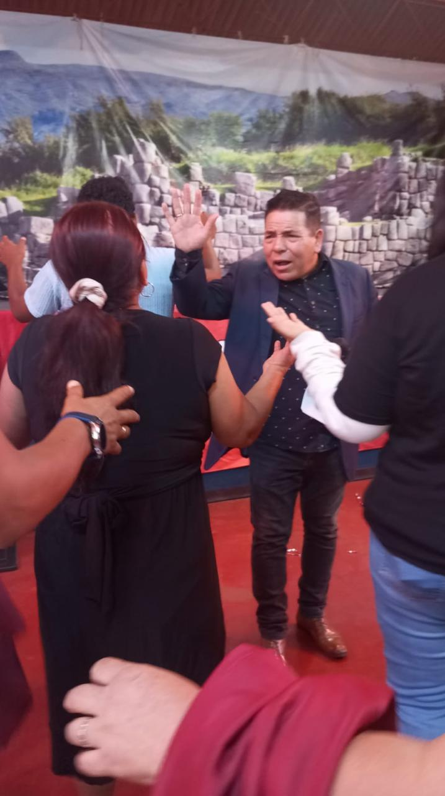
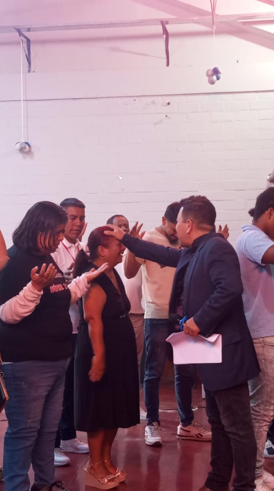

Alabanza y Adoración
Voces e instrumentos al servicio de un mismo propósito: crear un espacio de encuentro genuino.
SALMOS 24
Alzad, puertas eternas: aquí entra el Rey de gloria. Una casa para adorarle — ven como estás, hay un lugar para ti.
Próximo culto en
QUIÉNES SOMOS
Jesús Rey de Gloria nació en 2010 de una convicción sencilla: la iglesia no es un edificio, es una familia que camina junta. Empezamos siendo doce personas reunidas en una sala; hoy somos una comunidad que sigue creciendo, pero el corazón no cambió.
Creemos en la Biblia como Palabra de Dios, en la gracia que transforma vidas, y en que cada persona que cruza nuestra puerta merece ser recibida sin juicio y con esperanza real.
Conócenos en persona →años caminando juntos
ministerios activos
cultos cada semana
puertas abiertas
VERSÍCULO DEL DÍA
Cargando palabra de aliento…
TE ESPERAMOS
CÓMO SERVIMOS
Cada persona tiene un lugar y un propósito. Estas son las puertas de entrada para servir y crecer en comunidad.
Voces e instrumentos al servicio de un mismo propósito: crear un espacio de encuentro genuino.
Un espacio seguro y divertido donde los más pequeños descubren el amor de Dios a su manera.
Fe real para preguntas reales. Comunidad, discipulado y propósito para la nueva generación.
Manos que sirven puertas afuera: comedores, visitas y ayuda concreta a quien lo necesita.
Encuentros y consejería para fortalecer el hogar como base de una fe que se transmite.
Un equipo dedicado a sostener en oración cada petición que llega a la iglesia.
LIBERACIÓN Y RESTAURACIÓN
Recordamos lo que Dios está haciendo en cada vida y celebramos juntos su poder restaurador.


VIDAS TRANSFORMADAS
¿NECESITAS ORACIÓN?
Escríbenos tu petición. Nuestro equipo de intercesión la recibe en confidencialidad y ora por ti durante toda la semana.
TE ESPERAMOS